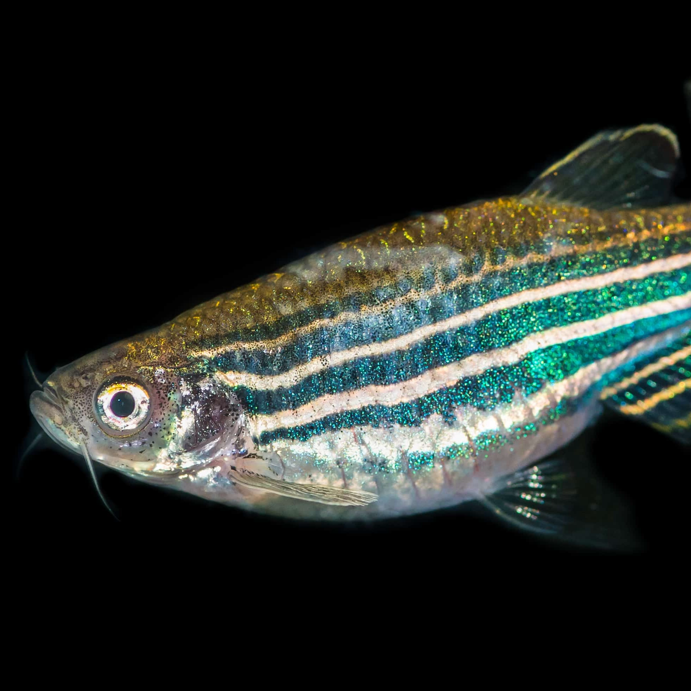

Authors
Arpita Ghosh [1], Aakash M. Rao [2], Bittu K. Rajaraman [1,3,4]
Affiliations
- Department of Psychology, Ashoka University
- Department of Computer Science, Ashoka University
- Department of Biology, Ashoka University
- Corresponding Author
Aim
The aim of this work is to use vision based approaches to identify and free-water fish movement, allowing for the examination of behavioural patterns (preferences, aversions, etc).
My role
I carried out the entire processing and modelling framework and built the tracker.
An illustration of the work